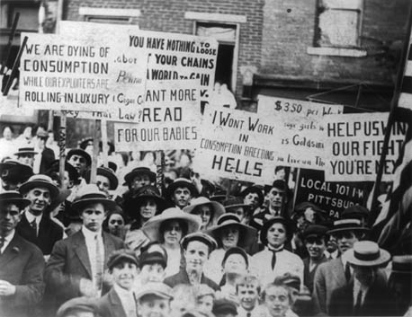

The General Strike - Page 4
The puropse of industrial unionism is to give the working class the greatest possible organized power in industry. Unquestionably the General Strike, either on or off the job, is the most perfect manifestation of this power. If the craft unions of today are examined in regard to their adaptability to this end it will put the revolutionary industrial union movement in an entirely new light. Also it will reveal clearly the shortcomings of conventional unionism in general and the craft union movement in particular. After all, the full measure of power is the acid test of any labor organization.
A cursory glance at the craft union movement will reveal the fact that it is constructed in such a way as to divide rather than to unify the forces of labor. The craft union is not designed to enable labor to use its full power. This type of union came into existence during the period of industrial evolution known as small production when the tools of the craft and the skill of the craftsman were important things. In those days the organized power of the tradesman consisted in his having monopoly on the skill necessary to make the tools of his trade industrially productive. The withdrawal of this skill during periods of strikes was all that was necessary to force the old-time employer of labor to terms. Thus it happened that the craft union was organized around the, then important, tools of the tradesmen.
But all this has been changed. The onward march of the machine process has to a large extent made both tools and skill unnecessary. This great advance in technical development has made the old fashioned trades union unable to cope with modern conditions. Craft unions still carry on as a matter of habit, it is true, but they are anachronisms in this modern world. Some of them merely serve as pie-cards for the tired business men who are their officials and all such unions serve more or less as props of the existing order. But they are not unions in the modern sense at all. They are merely the shells of once useful unions operating to secure advantages for a few favored groups of workers without regard to the interests of the working class as a whole. They are organized within the capitalist system which they have been taught to take for granted, and they have no thought or program of anything beyond this system.
In relation to the manifest weakness of the trade union structure and concept the I.W.W. Preamble points out with telling emphasis:
"We find that the centering of the management of industries into fewer and fewer hands makes the trades unions unable to cope with the ever growing power of the employing class. The trade unions foster a state of affairs which allows one set of workers to be pitted against another set of workers in the same industry, thereby helping to defeat one another in wage wars. Moreover the trade unions aid the employing class to mislead the workers into the belief that the workers have interests in common with their employers."
Labor's problem today is not a craft but an industrial problem. A labor union at the present time, to be an effectual instrument of offense and defense, must conform to the structure of modern industry. It must be industrial rather than craft in form. But the craft unions have not kept pace with the needs of a changing world. They have very largely remained just where they were in the beginning. Far from being the helpful fighting instruments they were in the old days, they have now become merely a further means of effecting the enslavement of the class whose interests they are supposed to serve.
A General Strike of craft unions is an unthinkable impossibility. Being organized for the sole purpose of enabling a few groups of workers to "get by" under capitalism, they lack both the form and the spirit necessary to make possible united action for a common objective against a common foe. For this reason, as organized today, they would be of very doubtful help to any unified effort of the working class to free itself from wage slavery by industrial means. The modern industrial struggle demands modern industrial weapons. And in this regard the craft union is as obsolete as the dodo. Workers who conceive of the final struggle for emancipation in terms of industrial power will have to look elsewhere for an organizational form more suitable for this purpose.
The so-called independent industrial unions are in the same category. It is true their rather loose industrial structure makes it possible for them to think of their union in terms of a given industry. But, as in the case of the U.M.W. of A. [United Mine Workers of America] and other similar unions, they are divided into districts if not in crafts and are tied down by contracts which make it impossible for them to act in unison. In no case is there evidence of any attempt or desire on their part to ally themselves for the purposes of solidarity with transport or other workers on One Big Union lines. Organized railroad, clothing and many other workers in the U.S.A. are similarly bound, similarly divided and similarly unable to get together for united action of any sort.
As far as the interests of Labor are concerned these steps must be in the right direction. They must not only be distinctly industrial, they must also be unquestionably revolutionary.
"Instead of the conservative motto, 'A fair day's wage for a fair day's work,' we must inscribe on our banner the revolutionary watchword, Abolition of the wage system."
So states the I.W.W. Preamble. And in this historic slogan is found the source of the strength and inspiration of the organized industrial workers of all the world.

Working class political parties, while not unanimous in endorsing the General Strike, are frank in admitting the need for economic power in any program of revolutionary reconstruction. Socialists and Communists alike seem to recognize the importance of industrial unionism but they don't do much about it. They can't. Political parties are not organized that way.
On more than one occasion however, particularly in Europe, both Socialists and Communists have appealed to the workers for a General Strike. This is a thing which is more than likely to happen again. The trouble is that these organizations, being political parties and not labor unions, lack the machinery to put a General Strike into effect. After all other measures fail they issue frantic appeals for what they should have thought about in the first place-- industrial solidarity. Usually they are forced to appeal to more or less unsympathetic conservative unions with which their contact has been largely nominal. Such unions, neither in structure nor spirit were designed to respond effectively to such demand.
A planned and consciously modern structure is as necessary for the labor union as is a planned economy for society as a whole. To expect class action from a trades union is at least as foolish as to expect revolutionary planks in a conservative party platform. This haphazard and hit-or-miss method of making eleventh-hour appeals for a General Strike does not indicate the strongest possible confidence in the efficacy of political action. The efforts of the politically-minded Socialists and Communists of Germany in 1932 to call a General Strike in order to forestall Fascism is an example in point. After 1914 they should have known better and should, long since, have prepared for such an emergency by forgetting about the game of politics long enough to build up a powerful industrial movement along One Big Union lines. Then the story would have been vastly different from what it is today.
The I.W.W. from its inception has held before the workers the goal of industrial democracy to be obtained by means of the General Strike. The Preamble, of which hundreds of millions of copies have been circulated, states in unmistakable terms:
"These conditions can be changed and the interests of the working class upheld only by an organization formed in such a way that all its members in any one industry, or in all industries if necessary, cease work whenever a strike or lockout is on in any department thereof, thus making an injury to one an injury to all."
Has ever a statement appeared indicating more clearly the organic interdependence, unity and potential power of the world's producers?
In spite of certain misleading surface similarities, which are unduly stressed by shallow observers, the European anarcho-syndicalist movement and the I.W.W. differ considerably in more than one particular. This was made inevitable by reason of the fact that the I.W.W. was the result of a later and more mature period of industrial development.
This accounts for the fact that European Syndicalism, unlike the I.W.W., is not organized into One Big Union on the basis of perfectly co-ordinated, centralized industrial departments. It also accounts for the fact that the form of the I.W.W. is designed to serve not only as a powerful combative force in the everyday class struggle, but also as the structure of the new society both as regards production and administration. Incidentally the I.W.W. concept of the General Strike differs almost as much from that of the anarcho-syndicalist as from that of the political or craft unionist. In form, structure and objective, the I.W.W. is more all-sufficient, more mature and more modern than any of its anarcho-syndicalist predecessors.
It may be objected that the I.W.W. has not contacted and co-operated with the technicians to the extent that the European Syndicalists have done. If this is true at all it is due not to any lack of appreciation of the importance of the technician in the industrial organism but rather the fact that the I.W.W. has been embattled in the American class struggle to an extent which has made sustained contact difficult.
The I.W.W. has always held the technician as a vitally necessary member of the producing class. He is indispensable to any program of fundamental economic reconstruction. His place, in the One Big Union Chart, corresponds to his place and his importance in industry. The I.W.W. conceives of Industrial Democracy as the technological managerial forces cooperating with the working productive forces of the army of industry under the General Administration of the One Big Union in the interests of the entire human race. Practically from its inception the I.W.W. has welcomed the engineer into its councils. Some of its outstanding educators have been technically trained men. The non-political, anti-entrepeneur, industrially-minded engineer has always been recognized by the I.W.W. as a blood brother. In 1921 an attempt was made by the I.W.W. to build up a Bureau of Industrial Research under the direction of a clear-thinking group of capable engineers with both social vision and a sense of social responsibility. This ambitious project the I.W.W. was forced to abandon because so many of its active officials had at that time been sent to prison. Prior to that time and since, the I.W.W. has preached and practiced that type of disciplined solidarity which, according to the technician, is so vitally necessary to any plan of carrying on production exclusive of the profit-grabbing Captains of Finance.
The I.W.W. is in full agreement with and committed, by a policy of nearly a half of a century, to the idea that workers and engineers are the only indispensable elements in modern productive processes. The technician is in every sense of the word a fellow worker. He is the "other self" of the man at the machine-- the managerial technological force in industry which counterpoints the productive working forces in the army of production. Both are equally necessary to any plan of carrying on production when capitalism shall have been overthrown. Both are equally necessary to any plan of putting an end to the profit system by means other than those of bloodshed and destruction. This point looms big in the I.W.W. doctrine of the General Strike. It is well for technicians, I.W.W. menbers, and students generally to keep it in mind.
Nothing could be more natural than this bond of fellowship between the I.W.W. and other industrially minded groups in the army of production or among working class movements. It has been shown that craft and independent industrial unions make the attainment and use of Labor's full economic power impossible or difficult of attainment. It has also been shown that revolutionary political parties, apart from educational and defensive activities, complicate rather than simplify the situation as far as the General Strike is concerned. Therefore the I.W.W. appeals to the workers in the world's industries to put aside prejudices and differences of opinion as to race, color, religion or politics and unite their economic power into One Big Union regardless of national boundary lines in order to put a final end to the hideous monster of world Imperialism which has enslaved and degraded the workers of every nation. The General Strike is ONE program on which all wage workers should agree.